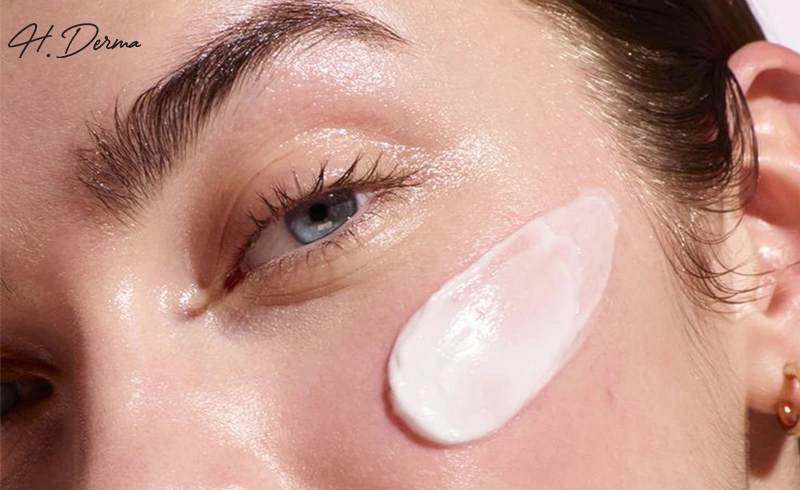

Your Prescribed Routine
Clinically-backed protocols designed for recovery, maintenance, and long-term skin health.

RECOVERY
12 MIN READ
Post-Peel Skincare Guide
Essential protocols for chemical peel recovery. Focusing on barrier repair, intense hydration, and professional-grade soothing agents.
verified_user
Clinical Protocol
NUTRIENTS
8 MIN READ
Enhancing Beauty with Vitamin E
Discover the antioxidant power of Vitamin E. Learn how it repairs oxidative damage and strengthens the natural lipid barrier.
science
Formula Science